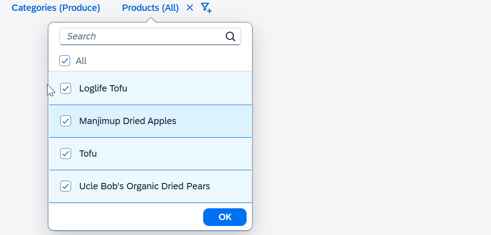

For example, an application displays a list of products and uses a facet filter with two
facets: Categories and Products. If users select a category filter, they should only be
able to filter products from that selected category. Facet filter does
not explicitly handle dependencies between facets. Instead, use
FacetFilterList events in the application.
In this example, only products from the selected category are displayed.

sap.ui.require([
"sap/m/library",
"sap/m/FacetFilter",
"sap/m/FacetFilterList",
"sap/m/FacetFilterItem",
"sap/ui/model/Filter",
"sap/ui/model/FilterType",
"sap/ui/model/FilterOperator",
"sap/ui/model/odata/v2/ODataModel"
], function (library, FacetFilter, FacetFilterList, FacetFilterItem, Filter, FilterType, FilterOperator, ODataModel) {
const ListMode = library.ListMode;
const oCategoriesModel = new ODataModel("/uilib-sample/proxy/http/services.odata.org/V3/Northwind/Northwind.svc");
const oCategoriesFFL = new FacetFilterList({ // create the categories facet list
title: "Categories",
mode: ListMode.SingleSelectMaster, // restrict to one selection for simplicity
key: "Categories",
items: {
path: "/Categories",
template: new FacetFilterItem({
text: "{CategoryName}",
key: "{CategoryID}"
})
}
});
oCategoriesFFL.setModel(oCategoriesModel); // set the data model
// create the data model for the products facet list
const oProductsModel = new ODataModel("/uilib-sample/proxy/http/services.odata.org/V3/Northwind/Northwind.svc");
const oProductsFFL = new FacetFilterList({
title: "Products",
key: "Products",
items: {
path: "/Products_by_Categories",
template: new FacetFilterItem({
text: "{ProductName}",
key: "{ProductID}"
})
},
listOpen: function (oEvent) {
// only display products from the selected category (if any)
const aSelectedKeys = Object.getOwnPropertyNames(oCategoriesFFL.getSelectedKeys());
if (aSelectedKeys.length > 0) {
const oBinding = this.getBinding("items");
const oUserFilter = new Filter(
"CategoryName",
FilterOperator.Contains,
oCategoriesFFL.getSelectedKeys()[aSelectedKeys[0]]);
const oFinalFilter = new Filter([ oUserFilter ], true);
oBinding.filter(oFinalFilter, FilterType.Application);
}
},
});
oProductsFFL.setModel(oProductsModel);
// create the facet filter control
const oFF = new FacetFilter(genId(), {
lists: [ oCategoriesFFL, oProductsFFL ],
});
});